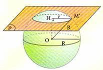
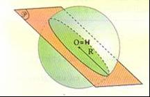
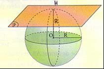
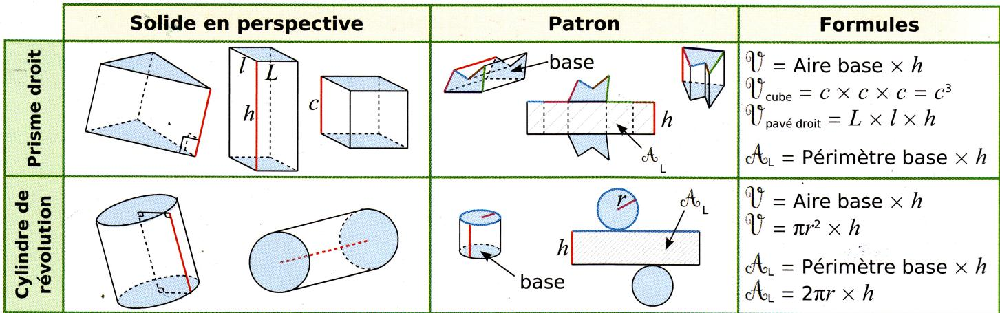
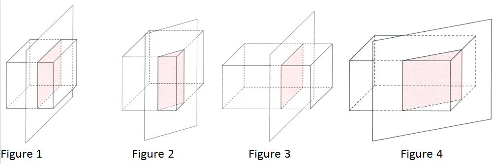
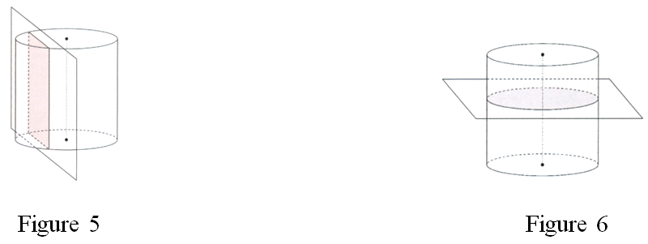
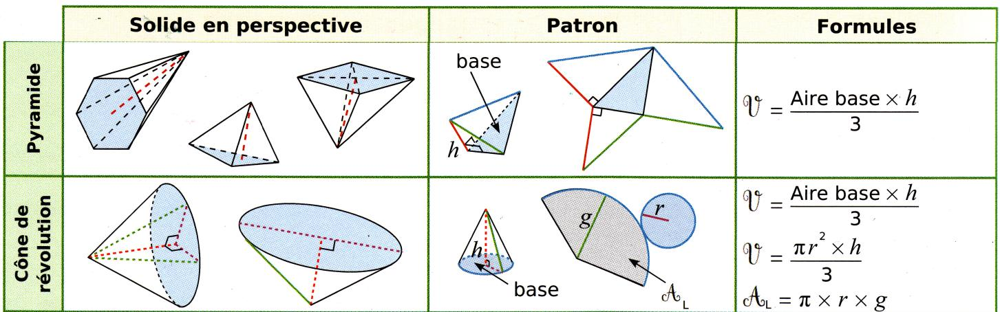
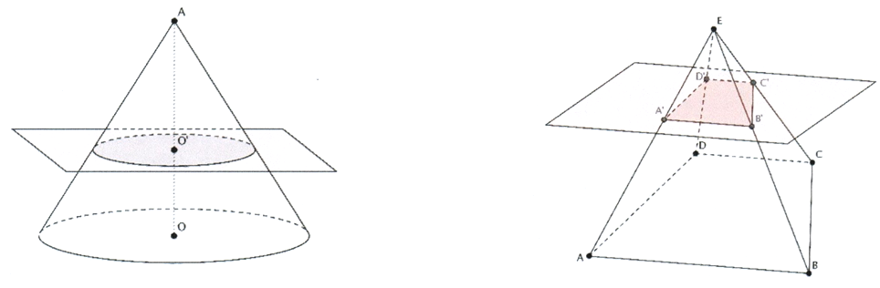
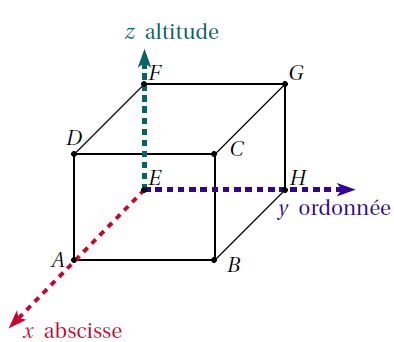
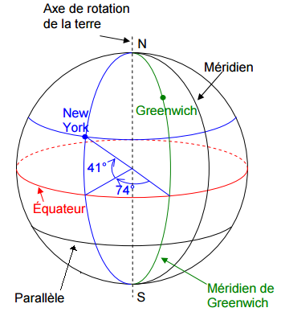

Définition : Soit O un point de l'espace et R un nombre positif :
La sphère de centre O et de rayon R est l'ensemble des points M de l'espace tels que OM = R.
La boule de centre O et de rayon R est l'ensemble des points M de l'espace tels que OM ≤ R.
Le cercle de centre O et de rayon OA est appelé grand cercle.
A, B, C, N, S sont des points de la sphère.
O est le centre de cette sphère, de rayon R = OA = OB = OC.
Le segment [NS] est un diamètre de la sphère.
Aire d'une sphère et volume d'une boule
Propriétés :
L'aire d'une sphère de rayon R est égale à 4 × π × R².
Le volume d'une boule de rayon R est égal à
43 × π × R³.
Exemples : Si R = 5 cm
L'aire d'une sphère de rayon R est de :
A= 4 × π × R²= 4 × π × 5 cm × 5 cm= 100π cm²
Le volume d'une boule de rayon R est de :
V= 43 × π × R³= 43 × π × 5 cm × 5 cm × 5 cm= 5003π cm³
Section d'une sphère par un plan
Propriété : La section d'une sphère par un plan est un cercle.
Le point H est le point d'intersection du plan et de la perpendiculaire au plan passant par O.
La distance OH est appelée la distance de O au plan.
Pour tout point M' de la section, le triangle OHM' est rectangle en H.

Cas particuliers :

Si le plan passe par O (OH = 0) : grand cercle

Si le plan est tangent à la sphère (OH = R) : point H seulement
Cubes, parallélépipèdes rectangles et cylindres de révolution
Volumes, aires latérales et patrons de ces solides

Sections particulières de cubes, de parallélépipèdes rectangles et de cylindres de révolution
Propriétés :
La section d'un cube par un plan parallèle à une face est un carré. (fig. 1)
La section d'un cube par un plan parallèle à une arête est un rectangle. (fig. 2)
La section d'un parallélépipède rectangle par un plan parallèle à une face est un rectangle. (fig. 3)
La section d'un parallélépipède rectangle par un plan parallèle à une arête est un rectangle. (fig. 4)
La section d'un cylindre de révolution par un plan parallèle à son axe est un rectangle. (fig. 5)
La section d'un cylindre de révolution par un plan perpendiculaire à son axe est un disque. (fig. 6)


Pyramide et cône de révolution
Volumes, aires latérales et patrons de ces solides

Section d'une pyramide et d'un cône de révolution par un plan parallèle à la base
Définition :
L'agrandissement de rapport k d'un objet est la transformation qui consiste à multiplier toutes les longueurs de cet objet par un nombre k supérieur à 1.
La réduction de rapport k d'un objet est la transformation qui consiste à multiplier toutes les longueurs de cet objet par un nombre positif k inférieur à 1.
Propriété : Dans un agrandissement ou une réduction de rapport k, les aires sont multipliées par k² et les volumes sont multipliés par k³.
Propriétés :
La section d'une pyramide par un plan parallèle à la base est une réduction de la base de la pyramide.
La section d'un cône de révolution par un plan parallèle à la base est un disque.
La « petite pyramide » et le « petit cône » obtenus sont des réductions de la pyramide et du cône sectionnés. Le rapport de réduction k est égal au quotient d'une longueur de la petite pyramide ou du petit cône par la longueur correspondante de la pyramide ou du cône de départ.

Cette section est le cercle de centre O' et de rayon r et le coefficient de réduction est :
k = AO'AO
Cette section est le quadrilatère A'B'C'D' et le coefficient de réduction est :
k = EA'EA = EC'EC = A'B'AB = …
Repérage dans l'espace
Repère de l'espace
Définition : Un repère de l'espace est formé d'un sommet d'un pavé droit et des 3 droites tracées sur les arêtes partant de ce sommet.
On peut alors repérer n'importe quel point de ce pavé droit par 3 nombres qui sont les coordonnées de ce point.
Le premier sera son abscisse, le second son ordonnée et le troisième son altitude (ou sa côte).
ABCDEFGH est un parallélépipède rectangle.
Le repère formé par les arêtes [EA], [EH] et [EF] a pour origine le point E. On le note (E ; A ; H ; F).
Les coordonnées d'un point quelconque sont :
abscisse ;
ordonnée ;
altitude
les coordonnées du point E sont : E(0 ; 0 ; 0) ;
les coordonnées des points A, H, F sont :
A(1 ; 0 ; 0) ; H(0 ; 1 ; 0) ; F(0 ; 0 ; 1) ;

Se repérer sur une sphère
La Terre a sensiblement la forme d'une boule de 6 370 km de rayon.
Les parallèles sont des cercles parallèles à l'Équateur. Ils découpent la Terre « en rondelles » à partir d'une ligne imaginaire appelée « l'équateur ». Ils donnent la latitude Nord ou Sud comprise entre 0° et 90° par rapport à l'Équateur.
Les méridiens sont des demi-cercles qui relient les deux pôles. Ils découpent notre planète comme des quartiers d'orange à partir d'une autre ligne imaginaire appelée « le méridien de Greenwich ». Ils donnent la longitude Est ou Ouest comprise entre 0° et 180° par rapport au méridien de Greenwich.

Exemple : Les coordonnées géographiques de New York sont : (74°O ; 41°N)
74°O est la longitude et 41°N est la latitude.